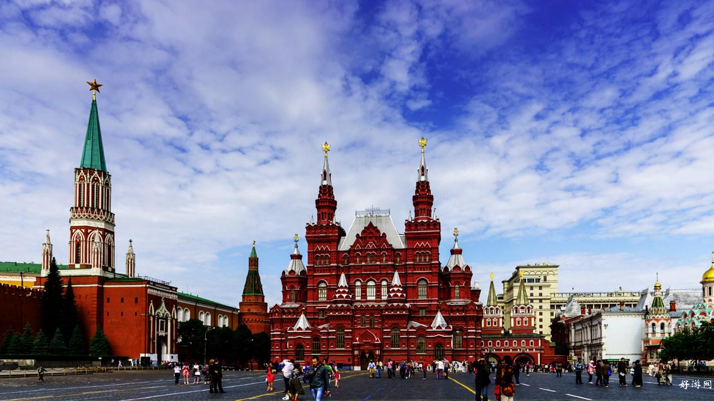
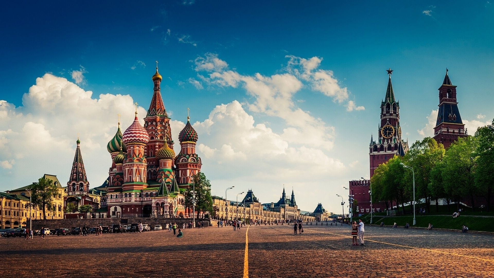

红场的历史
发表于：2016.9.9
红场在俄语中，“红色的”含有“美丽”之意，“红场”的意思就是“美丽的广场”。红场的大规模扩建是在1812 年以后。那时，拿破仑的军队纵火焚烧了莫斯科，莫斯科人民重建家园时，拓宽了红场。到本世纪20 年代，红场又与邻近的瓦西列夫斯基广场合二为一，形成现在的规模。红场南北长695 米，东西宽130 米，总面积9 万多平方米。广场用赭红色方石块铺成，油光瓦亮。广场两边呈斜坡状，整个红场似乎有点微微隆起。在广场南面，向莫斯科河微倾的斜坡上，矗立着瓦西里·勃拉仁内大教堂。这座教堂是为了纪念俄国沙皇占领喀山公国和阿斯特拉罕，于1555～1561 年修建的。它被誉为古代俄罗斯建筑艺术的卓越代表。教堂是由大小9座教堂巧妙结合起来的，周围8 座略小的教堂团团围住中间稍大的教堂，构成了一组精美的建筑群体。9 座教堂均为圆顶塔楼，中央主塔高47 米，周围是8 座高低、形状、色彩、图案、装饰各不相同的葱头式穹窿。教堂用红砖砌成，白色石构件装饰，穹窿顶金光闪烁，配以鲜艳的红、黄、绿色。整座教堂洋溢着浓烈的节日气氛。在教堂前面，有爱国志士米宁和波扎尔斯基纪念碑。 红场北面，是一座三层红砖楼，其式样仿照古代俄罗斯建筑，南北各有尖塔8 座。这是建于19 世纪的历史博物馆，里面收藏有450 万件展品。红场东侧是莫斯科最大的国营百货商店建筑群，修建于20 年代初，分上下两层，营业面积近8 万平方米。 红场有不少著名的建筑物，南面是瓦西里升天大教堂，又名波克罗夫大教堂。它是伊凡雷帝为了纪念1552年战胜喀山鞑靼军队而下令建筑的。当你看到这座教堂，将会被它独特的建筑风格所吸引。这座教堂中间是一个带有大尖顶的教堂冠，8个带有不同色彩和花纹的小圆顶错落有致的分布在它的周围，再配上九个金色洋葱头状的教堂顶， 绝妙无比。伊凡雷帝为了别处不再出现这样美丽的教堂，下令弄瞎了建筑师的双眼。(可怜的建筑师！) 瓦西里升天大教堂前面是民族英雄米宁和波扎尔斯基雕像(1818年雕像落成)。1611年至1612 年，他们打败了波兰侵略军，解放了莫斯科。 红场教堂前是一个圆形的平台，俗称断头台，是当年向群众说教和宣读沙皇令的地方。同时也是行极刑的地方，行刑是在台下进行，在台上宣读处死令和犯人罪状。 瓦西里升天大教堂的南面是瓦西里斜坡。一直延伸到莫斯科河畔。 列宁墓的后面与克里姆林宫红墙之间。有12块墓碑：斯大林、勃列日涅夫、安德罗波夫、契尔年科、捷尔任斯基等前苏联政治家。斯大林的遗体最初也在列宁墓里，1962年10月31日，被移出列宁墓，葬在列宁墓的后面。 沿着克里姆林宫墙往前走，墙壁上还安放有朱可夫元帅，列宁的妻子克鲁普斯卡娅，高尔基，第一位宇航员加加林及其他前苏联名人的骨灰。 红场的东侧是国立百货商场。建成于1893年，由波梅兰兹夫设计，今天已成为世界知名的十家百货商店之一。红场的北面是历史博物馆，红砖白顶，也是莫斯科的标志性建筑，建于1873年 。95年5月8日，为纪念二战胜利50周年，在红场的北面，立起了二战英雄朱可夫元帅的雕像。
下一篇：大堡礁形成的原因
已经是第一篇了


评论区
此路不通
1楼
评论时间：2016-11-20 18:12:32
回复看来我应该多努力些才行，要不然我的博客就这么一直没有流量下去，岂不是太过于冷冷清清了？
此路不通
1楼
评论时间：2016-11-20 18:12:32
回复看来我应该多努力些才行，要不然我的博客就这么一直没有流量下去，岂不是太过于冷冷清清了？
此路不通
1楼
评论时间：2016-11-20 18:12:32
回复看来我应该多努力些才行，要不然我的博客就这么一直没有流量下去，岂不是太过于冷冷清清了？
发表评论